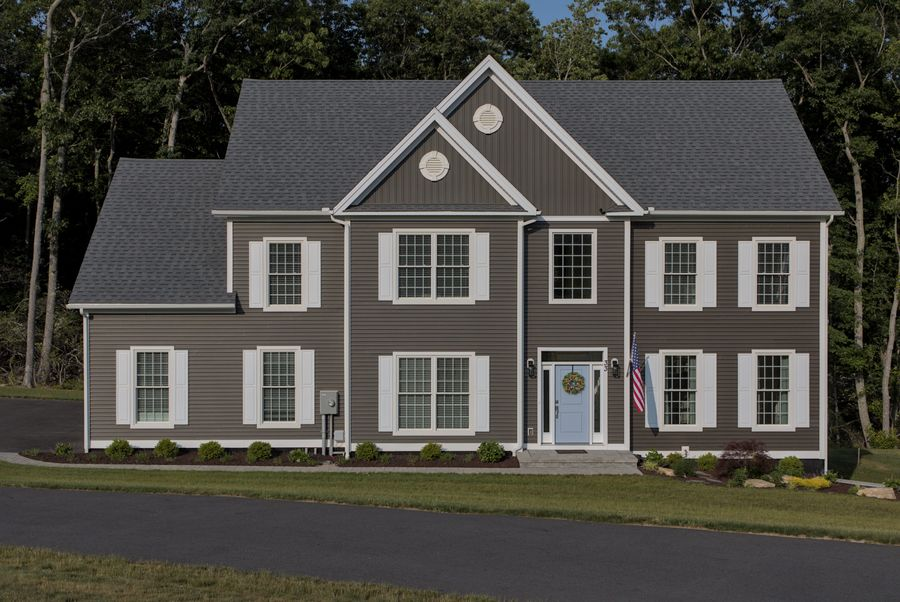
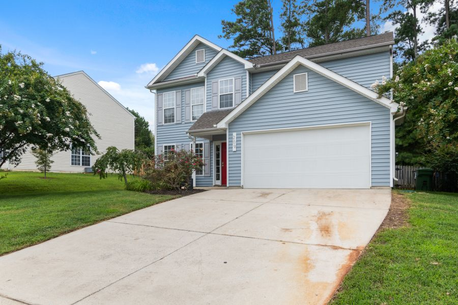

Western Kentucky
Your house isn’t worn out. It’s overdue.
Peeling paint, green-streaked siding, a driveway you’d rather guests didn’t look at. Most homes around here don’t need replacing — they need the prep done properly and paint that actually holds. That’s the whole job.
Free written estimates · No obligation · We answer 8am–8pm

What we do
Three ways to make a property look after itself again.
Exterior work, start to finish — washed, prepped, and finished so it holds up to a Kentucky summer and the winter behind it.

01 — Exterior PaintingExterior Painting
Siding, trim, garages and commercial buildings. Washed and prepped first, then finished in Sherwin-Williams so the coat lasts instead of flaking off in two summers.
- Siding
- Trim
- Garages
- Commercial
Pressure Washing
House washing, driveways, sidewalks and patios. Siding gets a low-pressure soft wash — enough to lift the mildew, not enough to force water behind it.
- House washing
- Driveways
- Sidewalks
- Patios
 03 — Deck & Fence
03 — Deck & Fence
Deck & Fence Staining
Bare wood drinks up weather. Cleaned, brightened and sealed with stain that keeps the grain and pushes the water back out where it belongs.
- Decks
- Fences
- Staining
- Sealing

Why paint fails
Paint doesn’t peel because it was cheap. It peels because of what was under it.
Anyone can roll a coat on. It’ll look fine in the driveway photo and it’ll be lifting by the second summer, because it was put over chalk, mildew and bare wood. The part that decides whether a paint job lasts is the part that happens before the first drop of color.
- 01Wash
Soft wash the surface down. Mildew and chalky residue come off, or the paint is just gripping dirt.
- 02Scrape & sand
Everything loose comes off and the hard edges get feathered, so you don’t read the old failure through the new coat.
- 03Prime
Bare wood and problem spots get spot-primed. Paint sticks to primer. It doesn’t stick to weathered timber.
- 04Paint
Then, and only then, Sherwin-Williams goes on — and it stays on.
Straight answers
What you’re actually worried about.
Everybody’s had a bad run with a contractor, or knows somebody who has. Here’s where we stand before you have to ask.
“They won’t show up.”
You get a day, and you get the owner’s number. If something moves — weather usually — you hear it from us first, not from an empty driveway.
“The price will creep.”
The estimate is written down before any work starts, and it lists what’s included. If something genuinely changes, we talk about it before it goes on the bill — not after.
“It’ll peel in two years.”
That’s a prep problem, nearly every time. Washing, scraping, sanding and priming is most of what you’re paying for here — the color is the easy part.
“They’ll damage my siding.”
Siding gets soft washed at low pressure, not blasted. High pressure on vinyl or wood drives water in behind it and causes the exact problem you called about.
“I’ll never get a straight answer.”
Phone’s answered 8am to 8pm by the person doing the work. No call center, no dispatcher, no chasing.
“It’s going to cost a fortune.”
You won’t know until you ask, and asking is free. Most exteriors around here cost a fraction of what replacing the siding would — that’s usually the real comparison.
Where we work
Across Western Kentucky.
Free estimate
Find out what it actually costs.
Send a few details — or just call. Either way you get a written number, no obligation, and nobody chasing you afterwards.